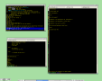
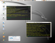
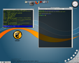
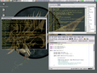
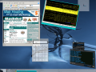
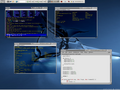
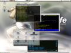

About every few months I get bored with my desktop setup and I go on a scavenger hunt for a new window manager. A while ago I thought it might be nice to keep screenshots of my old setups, and though I have misplaced quite a few of them, some have magically lived through my other passion (formatting my disks and trying new operating systems).
I should have some more on derelict disks that are gathering dust somewhere around here, so there may be more coming up sooner or later.
So for anyone that's interested, here are some of the desktops that I have enjoyed the past years.
Ow since i keep changing so much, the comments for eacht screenshot will always be out of date, and I do not update them :p

At work i have a pretty simple desktop, although screenshots can be deceiving; my background here is provided by floatbg, which continually changes the color of the background. I set it to a speed that you don't actually see it changing, but if you look away and back, it's different. Which is nice.

After upgrading my Ubuntu installs to Breezy i decided it was time for
another theme-hunting expedition. My current one is made of several
different parts. The background is a variant of the gdm-theme
Sleek dragon. The
icon set is
Dropline NEU and
the window borders are
Blended. I might
just stick with this one for a while. Of course, that's what I always think
:)

This time i went for the nice gdesklet program to provide me with desktop functionality. The default taskbar has been reduced to a bare minimum in the lower left corner, and the rest is provided by different gdesklet displays.

This was the desktop I used during my last year at University. Gnome has a boatload of features, most of which are very nice, and a decent default layout. Just like KDE though, it's not very nice to your processor and memory, and therefore runs much too slow for my taste. Still, if your computer is fast enough, I can heartily recommend Gnome.

I have played around a bit with Metisse, an fvwm-style window manager that uses openGL for rendering. It adds all kinds of features like translucency, rotation and scaling. Unfortunately, while it looks very nice (especially if you take a bit of time to configure fvwm. Which I didn't), it's not really stable yet. I had a lot of problems with the perceived location of the cursor, which is way off sometimes... Still a lot of fun to keep at the side for those quick movie-OS impressions on bystanders.

This is the current desktop on my laptop. I am pretty happy with xfce4, it does exactly what I expect and runs a hell of a lot faster than Gnome or KDE. I do like the multi-gnome-terminal from Gnome though, and probably couldn't live without anymore :). I use a zsh precmd() function to set the current directory or the currently running process as the title of the tab of my terminals. Which is nice.

Still a Gnome Desktop, but with some of the new X.org 6.8 Composite features, like translucency and dropshadows. Very nice, but veeeery slow on my card, and the composite manager has the tendency to crash every now and then (taking X with it).

{kind=link}
{kind=link}
{kind=link}
{kind=link}
{kind=link}
{kind=link}